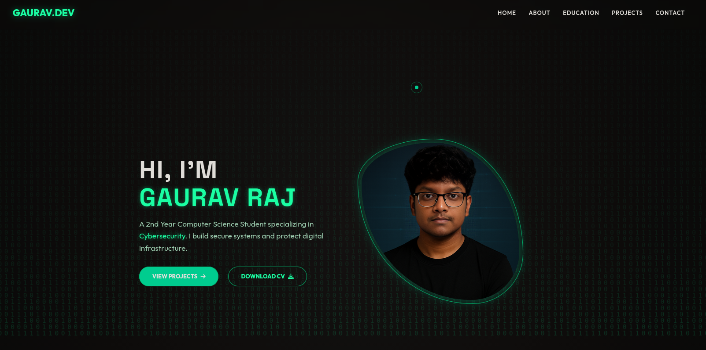

My Projects

Personal Portfolio
A professional, mobile-responsive portfolio website built with modern web technologies, featuring glassmorphic design and interactive elements.

MediLab Integration
A comprehensive healthcare platform for pathology lab management, featuring patient records, test reports, and appointment scheduling.
Network Security Tool
A simple port scanner and vulnerability checker built in Python to identify open ports and potential security flaws in a network.
Password Manager
A secure password vault with AES encryption, designed to store and manage credentials safely with a user-friendly interface.